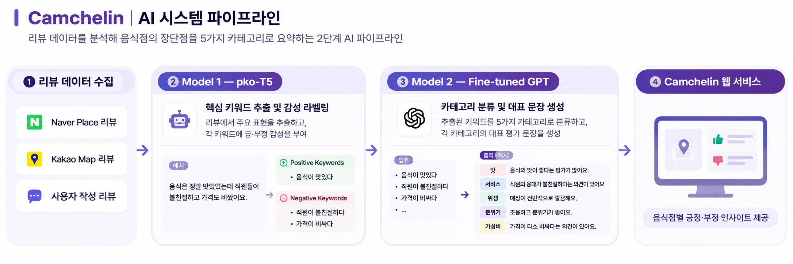

딥러닝 프로젝트 · 리뷰 분석
Camchelin
긍정적인 리뷰에 가려진 부정적 의견까지 함께 보여주어, 사용자가 음식점의 장단점을 균형 있게 판단할 수 있도록 돕는 AI 기반 맛집 리뷰 인사이트 플랫폼입니다.

Overview
기존 맛집 검색 플랫폼에서는 높은 별점과 긍정 리뷰에 가려진 부정적 평가를 파악하기 어렵고, 음식점의 장단점을 확인하기 위해 수많은 리뷰를 직접 읽어야 한다는 문제가 있었습니다.
Camchelin은 이를 해결하기 위해 음식점 리뷰에서 긍정·부정 키워드를 추출하고, 맛·서비스·위생·분위기·가성비의 5가지 카테고리별 대표 문장을 제공하는 AI 기반 맛집 리뷰 분석 플랫폼입니다. 사용자가 긍정적 의견뿐 아니라 부정적 의견도 함께 살펴보고 음식점을 보다 균형 있게 판단할 수 있도록 설계했습니다.
AI System Pipeline
Naver Place, Kakao Map 및 사용자 작성 리뷰를 분석하기 위해 두 단계의 NLP 파이프라인을 구축했습니다.

Key Contributions
- 리뷰 데이터 수집 및 학습 데이터 구축: Naver Place 및 Kakao Map의 음식점 리뷰 데이터를 수집·정리하고, OpenAI API를 활용해 키워드와 긍·부정 감성 라벨을 포함한 모델 학습 데이터를 구축.
- NLP 기반 리뷰 분석 모델 개발:pko-T5 기반 키워드 추출·감성 라벨링 모델과 OpenAI GPT 파인튜닝 기반 카테고리 분류·대표 문장 생성 모델을 결합한 2단계 분석 파이프라인 개발에 참여.
- GPT 파인튜닝 및 모델 평가: 학습·검증 데이터를 JSONL 형식으로 구성하고, GPT-4o-mini 파인튜닝 및 카테고리 정확도, ROUGE, BLEU, BERTScore 등을 활용한 결과 평가 수행.
- 모델 성능 평가: 파인튜닝한 GPT 모델을 29개 검증 샘플로 평가하고, 카테고리 커버리지 99.3%, BERTScore F1 0.77, METEOR 0.18, 평균 응답 시간 6.8초를 측정
- FastAPI 기반 모델 API 개발:두 AI 모델의 추론 기능을 REST API로 구현하고, 리뷰 텍스트와 키워드를 입력받아 분석 결과를 구조화된 JSON 형식으로 반환하도록 설계.
- Docker 기반 모델 배포: 각 AI 모델 API의 실행 환경과 의존성을 Dockerfile로 구성하고, Docker 컨테이너를 활용해 모델을 서비스에서 호출할 수 있는 형태로 배포.
Outcome & Learnings
음식점 리뷰를 긍정·부정 키워드로 분석하고, 5가지 평가 기준별 대표 문장을 생성하여 웹 서비스에 제공하는 AI 파이프라인을 구현했습니다.
이 프로젝트를 통해 개별 NLP 모델을 학습시키는 것뿐 아니라, 모델 간 입출력 형식을 연결하고 API와 컨테이너 환경을 구성해 실제 서비스에서 활용할 수 있도록 통합하는 경험을 쌓았습니다.